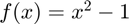
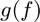
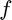
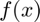
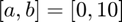

TEST_FUNCTION_COUNT
Test if an algorithm operating on a function correctly counts the number of function evaluations.
Back to Simple Unit Testing Toolbox Documentation.
Contents
Syntax
TEST_FUNCTION_COUNT(f,g) TEST_FUNCTION_COUNT(f,g,name,print,color) output = TEST_FUNCTION_COUNT(__)
Description
TEST_FUNCTION_COUNT(f,g) tests if the function f_fast is faster to evaluate than the function f_slow, where both functions do not have any input arguments. By default, these functions are both evaluated 1000 times in order to compute an average evaluation time.
TEST_FUNCTION_COUNT(f,g,name,print,color) does the same as the syntax above, but also allows the user to specify a test name, whether or not to print the test results to the Command Window, and whether or not to print those test results in color. This syntax is primarily used when defining unit test classes.
outputs = TEST_FUNCTION_COUNT(...) also returns the test outputs. Again, this syntax is primarily used when defining unit test classes.
Inputs
| Variable | Description | Format |
| f_fast | function handle for faster function | 1×1 function_handle |
| f_slow | function handle for slower function | 1×1 function_handle |
| args | (OPTIONAL) input arguments to functions (defaults to empty cell array) | cell array |
| n_eval | (OPTIONAL) number of times to evaluate functions when determining average evaluation time (defaults to 1000) | 1×1 double |
| name | (OPTIONAL) test name (defaults to empty string) | char array |
| (OPTIONAL) true if test result should be printed to Command Window, false otherwise (defaults to true) | 1×1 logical |
|
| color | (OPTIONAL) true if test result should be printed in color, false otherwise (defaults to true) | 1×1 logical |
NOTE: f_fast and f_slow must have the same input/output behavior.
Outputs
| Variable | Description | Format | ||||||||||||
| output | test outputs
|
1×1 struct |
Example
Let's define the function .
f = @(x) x^2-1;
Now, let's define a function  that takes  as an input and returns the number of times is evaluated when MATLAB's fzero function is used to find the root of  using an initial interval of . Note that we use function_for_example at the bottom of this page to help define .
g = @(f) function_for_example(f,0,10);
The fzero function returns the number of function evaluations it performs. To ensure it returns the correct number of function evaluations (i.e. it does not make a mistake in counting), we can use the TEST_FUNCTION_COUNT function.
TEST_FUNCTION_COUNT(f,g);
Function for Example
function n_feval = function_for_example(f,a,b) [~,~,~,output] = fzero(f,[a,b]); n_feval = output.funcCount; end
Passed.